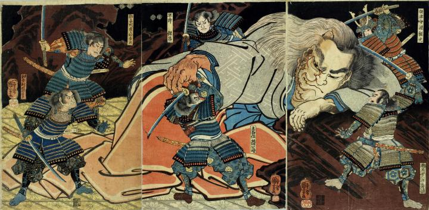

武者たちに取り囲まれる酒呑童子。余裕ありげな表情で岩にもたれかかっている。右半身は鬼のように変化し、頭には角、口元には牙が見える。
著作者：一勇斎國芳（歌川国芳）／出典：親書誌：U426_nichibunken_0085：大江山酒呑童子；オオエヤマシュテンドウジ／日付：2005／資源識別子：U426_nichibunken_0085_0001_0000
Copyright (c)2010- International Research Center for Japanese Studies, Kyoto, Japan. All rights reserved.